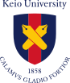
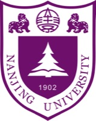

李光香

Photo by siyuan, at Yu yuan in Nanjing
|
我是南京大学政府管理学院行政管理专业 2022 级本科生，将于 2026 年 9 月继续在本院攻读硕士学位，师从张乾友教授。我的研究兴趣集中于公共数据治理。在四年的本科学习中，我以专业第一的成绩完成了学业，并在学术探索中逐步锚定了这一方向。 Email: 221820218 [at] smail.nju.edu.cn, molleo2oo4 [at] gmail.com |
News
|
Forum & Publications
|
Experience
|
实习生，南京市应急管理局办公室（宣传教育处合署）
2026.07 - 2026.08 |
|
|
 |
交换生，日本庆应义塾大学
2025.09 - 2026.02 |
Education
|
 |
行政管理 · 硕士研究生 2026.09 - 2029.06 |
|
行政管理 · 本科 2022.09 - 2026.06 |
Services
|
Social Practice
|
Awards & Honors
| 2025.12 | 国家奖学金，中华人民共和国教育部 |
| 2025.05 | 美国大学生数学建模竞赛 M 奖（前 6.80%），美国数学及其应用联合会 |
| 2025.05 | 南京大学优秀共青团员，共青团南京大学委员会 |
| 2025.05 | 南京大学第三十六届"银星杯"本科生学术论文竞赛三等奖，南京大学 |
| 2025.04 | 南京大学勤工助学先进个人，南京大学 |
| 2025.02 | 第十九届"挑战杯"南京大学选拔赛一等奖，南京大学 |
| 2024.12 | 南京大学栋梁奖学金优秀奖，中共南京大学委员会 |
| 2024.12 | 南京大学学生励志模范，南京大学 |
| 2024.11 | 宝钢优秀学生奖，宝钢教育基金会 |
| 2024.10 | 第三届"寻是杯"全国大学生公共管理决策模拟大赛总决赛一等奖，中国科学学与科技政策研究会 |
| 2024.06 | 第三届"寻是杯"全国大学生公共管理决策模拟大赛华东赛区特等奖，中国科学学与科技政策研究会 |
| 2024.06 | 南京大学基层学生会优秀个人，南京大学学生会 |
| 2024.05 | 美国大学生数学建模竞赛 H 奖（前 23.06%），美国数学及其应用联合会 |
| 2023.12 | 国家励志奖学金，中华人民共和国教育部 |
| 2023.12 | 南京大学优秀学生，南京大学 |